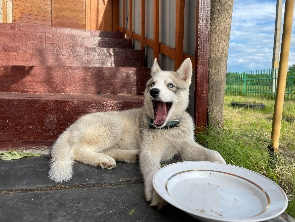
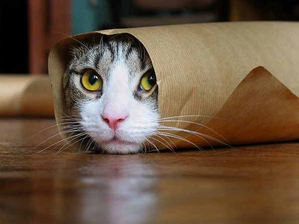
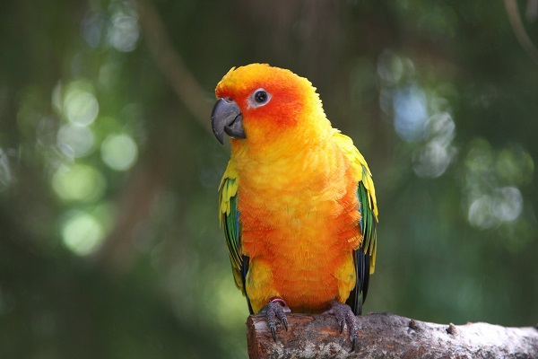
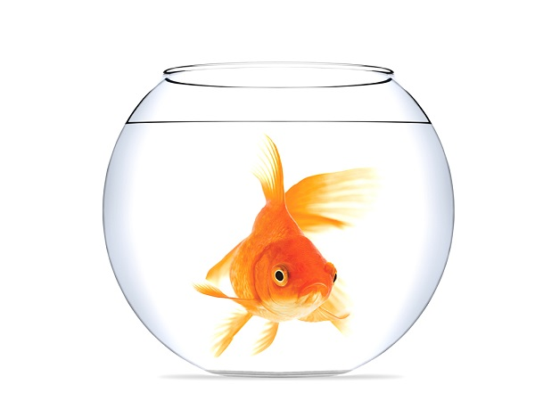

Почему мы любим животных и зачем они нам?
Люди и животные неразрывно связаны между собой. Невозможно даже представить каким было бы существование человека без этих милых существ. Еще в древние времена люди смогли приручить зверей, чтобы те, в свою очередь, помогали им выжить в трудных жизненных условиях. Сначала люди относились к животным как к инструменту, но потом потихоньку стали к ним привыкать и в итоге, полюбили настолько, что уже не смогли представить свою жизнь без них.
С тех давних пор, ничего не поменялось. Любовь к животным продолжает существовать и по сей день. Практически в каждой семье живет питомец, который требует к себе заботу и внимание. Когда человек дарит своей кошке, собаки, или какому-то другому четвероногому свою теплоту и нежность, они отвечают взаимностью. Очень важно прививать эти чувства подрастающему поколению. Ребенок должен видеть то, как родители относятся к «братьям нашим меньшим». От этого строится дальнейшее поведение будущего индивида в обществе. Это так мило наблюдать за тем, как малыш играет со своим пушистым другом и при этом выглядит самым счастливым на земле.
Забота о животных – это большой труд. Когда человек заводит себе какого-либо питомца – это показатель того, что человек очень ответственный и серьезный. Нужно понимать, что любимец нуждается в грамотном подходе: правильное питание, забота о здоровье, чистоплотность – все эти составляющие, играют важную роль для хорошего развития животного. Мы в ответе за тех, кого приручили – это правильные слова, только так человек сможет воспитать в себе сильную личность. К большому сожалению, существуют такие люди, которые видят животных только в роли игрушек, с ними можно только поиграть, а потом забыть и выкинуть. После этого многие животные оказываются на улице, и их дальнейшая судьба выглядит очень плачевно. Это говорит о том, что человек малоразвит. У него нет чувства ответственности, морали и совести. В таких случаях говорят, что человек хуже любого дикого зверя.
Поэтому любить животных очень важно. Это дает возможность осознать себя как личность. Понять насколько глубоки чувства и эмоции. Какая в человеке душа и насколько большое сердце. Любить животных, значит любить и себя, и тех, кто окружает нас в этом мире. А четвероногие товарищи, это оценят и всегда придут на помощь в трудную минуту, потому что преданность животных, намного сильнее человеческой.